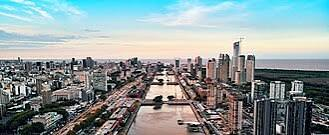
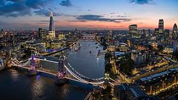
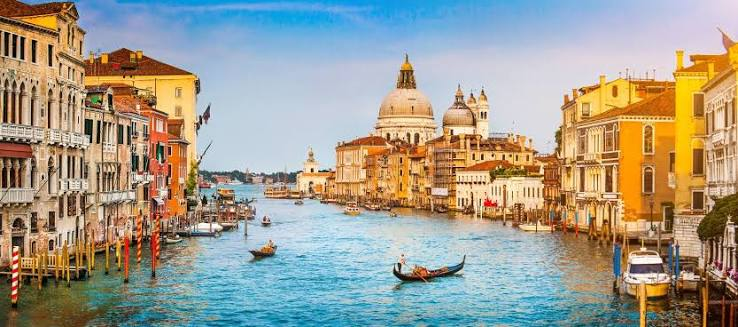
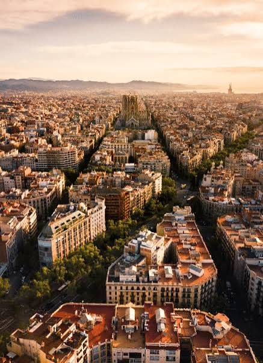
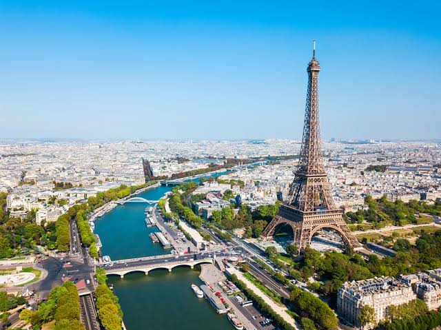

Buenos Aires - Argentina

Buenos Aires é uma cidade charmosa e cheia de cultura, conhecida por sua arquitetura, gastronomia e pelo famoso tango argentino.
Londres - Inglaterra

Londres combina história e modernidade, com atrações como o Big Ben, o Palácio de Buckingham e diversos museus e parques
Veneza - Italia

Veneza encanta seus visitantes com seus canais, construções históricas e passeios de gôndola por uma das cidades mais únicas da Europa.
Barcelona - Espanha

Barcelona se destaca por sua arquitetura, praias e pela influência de Gaudí, além de sua rica cultura e gastronomia espanhola.
Paris - França

Paris é conhecida como a Cidade Luz e encanta com seus monumentos, museus, cafés e atrações como a Torre Eiffel e o Louvre.